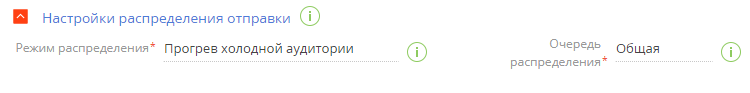
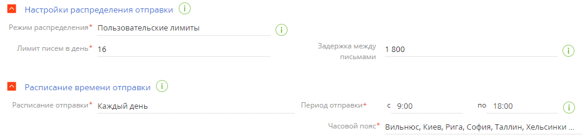

В Creatio вы можете настроить распределение отправки рассылки по времени, используя механизм троттлинга.
Троттлинг является одной из лучших практик по обеспечению высокой доставляемости рыссылок. С другими рекомендациями вы можете ознакомиться в статье Рекомендации по повышению доставляемости рассылок и видео-уроке Обеспечиваем доставляемость писем.
Троттлинг позволяет разделить крупную рассылку на несколько частей, которые будут передаваться почтовому провайдеру поочередно в течение заданного периода времени. Такой подход позволит улучшить показатели доставляемости рассылок и избежать попадания писем в папку “Спам” или отклонения их почтовыми сервисами. Используйте механизмы распределения в следующих случаях:
- Рассылка большого объема писем за короткий промежуток времени.
- Массовая отправка рассылок новым подписчикам.
- Рассылка подписчикам, с которыми длительное время не было коммуникаций по Email.
- Отправка первых рассылок с нового домена.
- Отправка рассылок после смены IP-адреса отправителя.
- Запуск тестовой рассылки, которую необходимо изменить или отменить непосредственно во время отправки.
- Отправка рассылки, которая прогнозировано может вызвать повышенную активность пользователей.
Во всех этих случаях постепенная отправка рассылки будет способствовать укреплению положительной репутации домена. Также механизм троттлинга позволит контролировать отправку рассылки, что может быть полезно, например, для распределения нагрузки на операторов контакт-центра, обрабатывающих обратную связь (лиды).
В Creatio используются следующие режимы распределения:
- “Прогрев холодной аудитории”— письма будут отправляться по преднастроенному расписанию. Подробнее: Прогрев холодной аудитории.
- “Пользовательские лимиты”— письма будут отправляться согласно заданному ежедневному ограничению. Подробнее: Пользовательские лимиты.
Прогрев холодной аудитории
Прогрев холодной аудитории — режим троттлинга, при котором каждый день после запуска рассылки отправляется ограниченный объем писем с фиксированной задержкой перед отправкой следующего письма. Ограничение по количеству писем и задержка между их отправкой позволяют имитировать отправку рассылки вручную, укрепив таким образом репутацию домена отправителя.
Преднастроенное расписание для прогрева аудитории составлено на основании лучших практик распределения отправки рассылок, согласно которым отправка выполняется ежедневно в течение двух недель и более с постепенным увеличением количества писем.
Если вы хотите внести изменения в это расписание, то обратитесь в службу поддержки Creatio, указав желаемые значения для количества писем и интервалов между их отправкой. После внесения изменений вы сможете увидеть обновленное расписание на странице рассылки по кнопке в поле Режим распределения. Настоятельно рекомендуем вносить корректировки в расписание только при наличии веских причин и базовом понимании того, как работают технологии прогрева.
Включить режим прогрева холодной аудитории
Настройка режима прогрева холодной аудитории выполняется до начала отправки рассылки.
- Перейдите в раздел Email и откройте нужную запись.
- Перейдите на вкладку Параметры.
- В поле Режим распределения выберите вариант “Прогрев холодной аудитории”. По кнопке в данном поле доступно расписание, согласно которому будет отправляться рассылка.
- В поле Очередь распределения укажите очередь, к которой относится рассылка. Письма в каждой очереди отправляются согласно отдельному расписанию прогрева аудитории. Подробнее: Настроить очередь распределения и Примеры прогрева аудитории. По умолчанию установлено значение “Общая” (Рис. 1). Поле является обязательным для заполнения.
Рис. 1 — Настройка режима распределения “Прогрев холодной аудитории”
- Примените изменения по кнопке Сохранить.
В результате отправка рассылки будет осуществляться в соответствии с указанным режимом распределения.
Настроить очередь распределения
Очередь распределения является инструментом сегментации холодных контактов. Функциональность позволяет сгруппировать несколько рассылок, чтобы сегментировать разные базы холодных контактов для отдельного прогрева каждой. Например, если часть аудитории добавлена из социальных сетей, а часть — посредством проведения вебинара, то, чтобы разделить маркетинговые стратегии отправки рассылок, рекомендуется разделить аудиторию на разные сегменты и создать для каждого отдельную очередь распределения. Подробнее: Примеры прогрева аудитории. Настройка очередей осуществляется в справочнике Очереди распределения. Для добавления новой очереди:
-
Откройте дизайнер системы, например, по кнопке
 в правом верхнем углу приложения.
в правом верхнем углу приложения. -
В группе “Настройка системы” кликните по ссылке “Справочники”.
-
Откройте наполнение справочника Очереди распределения.
-
Нажмите кнопку Добавить.
-
Введите название очереди, например, “Новая”, при необходимости добавьте комментарий в колонке Описание.
-
В колонке Код на английском языке укажите код, который будет использоваться для сегментации в сервисе массовых рассылок (Рис. 2). Вы можете использовать произвольные названия.
Примеры прогрева аудитории
Рассмотрим на примерах, что происходит при отправке рассылок с использованием механизма прогрева холодной аудитории:
| День | Лимит писем в день | Задержка между отправкой писем, сек |
|---|---|---|
| 1 | 25 | 400 |
| 2 | 25 | 400 |
| 3 | 25 | 400 |
| 4 | 50 | 400 |
| 5 | 50 | 400 |
| 6 | 75 | 400 |
| 7 | 75 | 400 |
Пример 1
Для каждого email-адреса отправителя рассылки будет применяться отдельное расписание.
Отправка рассылки начнется согласно первому дню расписания для режима “Прогрев холодной аудитории”. От имени sender1@example.com рассылка будет отправляться за три дня (по 25 писем в день), от имени sender2@example.com — за один день (25 писем в день).
Пример 2
Для новых отправителей отправка всегда будет начинаться с первого дня расписания. Для email-адресов, с которых уже проводилась отправка рассылки, расписание продолжится с того дня, на котором оно было остановлено:
- От имени sender3@example.com рассылка будет отправлена за один день (25 писем в день) согласно расписанию, начиная с первого дня.
- От имени sender2@example.com рассылка будет отправлена за один день (25 писем в день) согласно расписанию, начиная со 2-го дня.
- От имени sender1@example.com рассылка будет отправлена за два дня (по 50 писем в день) согласно расписанию, начиная с 4-го дня.
Пример 3
При изменении очереди распределения расписание будет начинаться первого дня даже для тех отправителей, которые уже отправляли данную рассылку другим контактам:
- От имени sender1@example.com рассылка будет отправлена за три дня (по 25 писем в день).
- От имени sender2@example.com рассылка будет отправлена за один день (25 писем в день), начиная с первого дня расписания.
Пользовательские лимиты
Пользовательские лимиты — режим троттлинга, который позволяет задать параметры равномерного распределения отправки рассылки. Он используется в тех случаях, когда необходимо регулировать нагрузку на сайт или на операторов контакт-центра, обрабатывающих обратную связь (лиды) по рассылке.
При выборе данного режима распределения ежедневно будет отправляться указанное количество писем. Срок действия режима можно ограничить, указав нужные значения в группе полей Расписание времени отправки. В последний день отправки рассылаются оставшиеся письма, количество которых меньше значения, заданного в поле Лимит писем в день.
Настройка пользовательских лимитов выполняется до начала отправки рассылки.
Для настройки:
- Перейдите в раздел Email и откройте нужную запись.
- Перейдите на вкладку Параметры.
- В поле Режим распределения выберите вариант “Пользовательские лимиты”.
- В поле Лимит писем в день укажите общее количество писем, обратную связь на которые операторы смогут обрабатывать ежедневно. В данном примере — “16”. Поле является обязательным для заполнения.
- В поле Задержка между письмами настройте интервал в секундах между отправкой писем с учетом того, сколько времени понадобится оператору на обработку каждого лида. В данном примере — “1800”.
- На детали Расписание времени отправки укажите расписание работы операторов:
- В поле Расписание отправки выберите “Каждый день”.
- В поле Период отправки укажите диапазон с 09:00 до 18:00 (Рис. 3).
Рис. 3 — Пример настройки пользовательских лимитов
-
Примените изменения по кнопке Сохранить.
В результате рассылка будет отправлена за 7 дней. В течение 6-ти дней будет отправляться по 16 писем в день, а на 7-й день будут отправлены 4 письма.